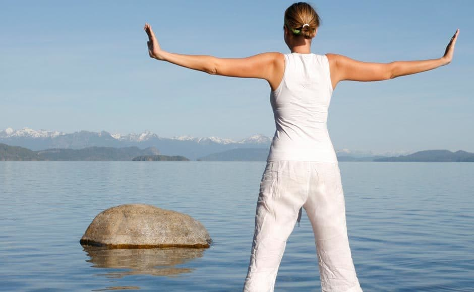

How to Meditate for Stress Relief
By: Sofia
Introduction
Meditation: Your Key to Unlocking Stress Relief
Imagine feeling relaxed, focused, and at peace, even in the midst of a chaotic day. Meditation is a powerful tool that can help you achieve just that. With its numerous benefits for both the mind and the body, it's no wonder that more and more people are turning to meditation for stress relief.
Stress is a common experience that can have lethal health consequences if not handled properly. It can lead to mental illnesses such as anxiety and depression, affect one's quality of life and relationships, and can even cause high blood pressure and other chronic health problems.
Meditation has been shown to be effective in reducing stress and anxiety levels. In a study conducted by the Center for Disease Control and Prevention, they found that mindfulness practices such as meditation can reduce the levels of the stress hormone cortisol in the body, thus promoting a sense of well-being.
In this website, we'll guide you through the basics of meditation, including different types of meditations, how to get started, and how it can bring you relief and calmness in your everyday life. Whether you're a beginner or an experienced meditator, this website will help you develop and deepen your meditation practice.
So, whether you're seeking a sense of calm during a hectic workday, or simply looking for a way to unwind after a stressful week, meditation can be a valuable technique to help soothe your mind and body. It's accessible to everyone and can be done virtually anywhere. With our expert guidance, you'll be able to start your journey towards tranquility, one breath at a time.
ad space
Benefits of Meditation
Meditation is a practice that has been gaining popularity over the years, especially in the Western world where life can be hectic and stressful. Meditation offers numerous benefits that have been confirmed by scientific research, and this article will explore some of the key benefits you can enjoy by practicing meditation.
Stress Relief
One of the key benefits of meditation is stress relief. Life can be demanding, and stress has become a part of everyday life for many people. The good news is that meditation can be used as a tool to manage your stress levels. According to a study published in the Journal of Alternative and Complementary Medicine, meditation can help reduce stress levels by increasing cortisol variability. Cortisol is a hormone that is released when we are stressed, and when its levels are elevated over an extended period, it can have a negative impact on our health.
Improves Sleep
In addition to stress relief, meditation can also help with improving sleep quality. Many studies have shown that meditation can help improve the quality of sleep by reducing the time it takes to fall asleep and increasing the overall duration of sleep. According to a study published in JAMA Internal Medicine, mindfulness meditation improved sleep quality in older adults with moderate sleep disturbances.
Reduces Anxiety
Meditation has also been shown to be effective in reducing symptoms of anxiety. Anxiety disorders are among the most common mental health disorders and can have a significant impact on an individual's quality of life. According to a study published in the Journal of Clinical Psychology, meditation can reduce symptoms of anxiety in individuals with generalized anxiety disorder.
Promotes Emotional Well-Being
Meditation can also help promote emotional well-being by reducing negative emotions such as anger, depression, and fear while increasing positive emotions such as happiness and empathy. According to a study published in Frontiers in Psychology, meditation can promote positive emotions by altering brain activity in areas related to emotion regulation.
In conclusion, meditation offers numerous benefits that can significantly improve your quality of life. By practicing meditation regularly, you can reduce stress levels, improve the quality of sleep, reduce symptoms of anxiety, and promote emotional well-being. So, whether you're looking to manage stress, get better sleep, or simply improve your overall well-being, meditation is definitely worth trying.
ad space
Preparing for Meditation
A Journey to Inner Peace Begins with Preparation
Mediation is an excellent way to beat the daily grind of stress and anxiety. It can help you tap into a sense of calm, clarity, and inner peace. But for many, the process of preparing for meditation can be a little intimidating. You may be wondering how to create the ideal environment, what sort of mindset you should have, or how to tailor your practice to your unique needs.
Here, we will delve into the art of preparing for meditation. We will explore practical tips and techniques that can help you get started and take your meditation journey to the next level. Whether you're new to meditation or a seasoned practitioner, this guide will help you set a solid foundation for your practice.
Among the tips to consider, one of the most critical aspects of preparing for meditation is creating a conducive environment. The area you choose for your meditation practice should be quiet, free from distractions, and clutter-free. This sets the tone for a calm and peaceful experience.
The right mindset is also crucial. Meditation requires an open and receptive state of mind. Be curious and open to new experiences and avoid being judgmental or critical of your practice. Consider setting an intention for your meditation session, like "I am focusing on reducing stress" or "I am open to new ideas."
Lastly, preparing for meditation involves choosing the right approach. From focused attention to mindfulness meditation, there are various options to explore. Research has shown that mindfulness meditation may be particularly effective as a stress management tool.
In conclusion, preparation sets the stage for a successful meditation session. Taking the time to create a conducive environment, cultivating the right mindset, and choosing the right approach will increase the likelihood of a fulfilling meditation experience. So, ground yourself, find a peaceful place, and set your intention – your journey to inner peace is about to begin.
ad space
Meditation Techniques
Discover Effective Meditation Techniques to Reduce Stress and Boost Your Mental Health
It's a fast-paced world that we live in, and with so many things going on, it's easy to get overwhelmed and stressed out. Meditation is a proven technique that can help you calm your mind, reduce anxiety, and feel more balanced and centered. But how do you get started with meditation? What are the key techniques that you need to know to reap the benefits of this practice?
In this section, we'll show you effective meditation techniques that you can use to reduce stress and boost your mental health. We'll cover everything from simple breathing exercises to more advanced visualization techniques, giving you a range of tools to choose from depending on your preferences and needs.
One of the most basic techniques to learn is breath awareness meditation, which involves focusing on the sensation of your breath as it moves in and out of your body. This simple practice can help you feel more present and grounded, and it's a great starting point if you're new to meditation.
Another technique that can be helpful for stress relief is guided meditation. This type of meditation involves listening to a recording of someone guiding you through a meditation practice, which can be especially useful if you have trouble focusing on your own.
Other meditation techniques that we'll cover include body scan meditation, walking meditation, and mindfulness meditation. Each of these techniques has its own unique benefits and can be helpful for different types of stress and anxiety.
By incorporating some of these meditation techniques into your daily routine, you can start to build a more peaceful and centered life. Whether you're new to meditation or have been practicing for years, there's always something new to learn and explore on your journey towards greater mental and emotional wellness.
ad space
Meditation Tips for Beginners
Meditation Tips: A Beginner's Guide to Reduce Stress
Stress is a part of our daily lives, but when it becomes chronic, it can negatively impact our health and wellbeing. Meditation is an effective way to manage stress and promote relaxation. However, if you’re new to meditation, it may seem daunting. Fear not! It’s possible to achieve calm and focus quickly with a few meditation tips for beginners.
1. Start small – The goal is to gradually increase the duration of your meditation sessions. Start with just a few minutes per day and then gradually increase the time as you become more comfortable.
2. Find a quiet space – Eliminate distractions such as television, computers, or phones to help you focus on your breathing.
3. Practice deep breathing – Deep breaths help slow down the “fight or flight” response and can quickly calm the body and mind. Take deep breaths in through your nose and then slowly exhale through your mouth.
4. Set an intention – Focus on a specific goal, such as relaxation or stress relief, before you begin your meditation.
5. Be patient – Meditation is a skill that takes practice. Be patient with yourself and don’t worry if your mind wanders. Simply acknowledge the thought, and then bring yourself back to your breath.
Meditation is a journey, and these meditation tips for beginners are just the beginning. As you continue to practice, you will develop your own techniques and discover new ways to relieve stress. Incorporating meditation into your daily routine can improve your wellbeing, increase your productivity, and help you live a happier life.
ad space
Additional Resources
Meditation is a powerful tool that can help alleviate stress and anxiety. However, practicing it consistently can be challenging, especially for beginners. Luckily, there are many additional resources available that can support your meditation practice and help you make the most out of your mindfulness journey.
One of the most effective ways to start meditating is to use guided meditations. These are pre-recorded mindfulness practices that offer step-by-step instructions on how to meditate. They come in different forms, such as audio, video, or mobile apps, and can be accessed online or offline. Guided meditations are great for beginners as they offer a structure to follow, making it easier to stay on track.
Another valuable resource for stress relief through meditation is a meditation course. These courses are designed to help you develop and deepen your meditation practice. Instructors provide personalized guidance, answer questions, and suggest different techniques tailored to each individual's needs. Meditation courses can be taken online or in-person, and usually involve a set curriculum that covers a range of mindfulness topics.
Books and articles on meditation are also worth exploring. They can provide insights into different meditation techniques, the science behind mindfulness, and the many benefits of regular meditation practice. Some popular titles include "The Power of Now" by Eckhart Tolle, "Mindfulness in Plain English" by Bhante Henepola Gunaratana, and "10% Happier" by Dan Harris.
Lastly, attending a meditation retreat is a powerful way to immerse yourself in meditation practice. These retreats offer an opportunity to disconnect from distractions and focus entirely on meditation. Retreats can vary in length, location, and type of meditation, so it's worth researching the one that best suits your needs.
Whether you're a seasoned meditator or just starting, using additional resources can help you experience the many benefits of mindfulness more fully. Use a combination of these resources to support your meditation practice, and you'll see how a little mindfulness can go a long way in reducing stress and improving your overall well-being.
ad space
Conclusion
After weeks, months, or even years of practicing meditation for stress relief, it’s time to wrap up your practice with a powerful and insightful conclusion. As you draw your meditation session to a close, take a deep breath and reflect on how far you’ve come.
Meditation is a tool that helps individuals maintain good mental health, manage stress and anxiety, and maintain a relaxed mindset. It is a technique that has been used for thousands of years, and its benefits have been scientifically proven. Learning how to meditate is not easy, and it takes time and practice to develop the skill. However, with daily dedication and commitment, you can reap the many benefits of meditation.
In conclusion, meditation can be an incredibly useful technique for managing the stresses of life. It can help you establish a more balanced perspective on your thoughts and emotions, leading to better overall health and wellbeing. We encourage you to continue to use meditation as a tool for stress relief, incorporating it into your daily routine whenever possible.
When it comes to meditation, there are many different approaches and techniques to try, so keep experimenting with new styles or methods until you find the one that works best for you. Remember, there is no one-size-fits-all approach to meditation, so be patient, stay focused, and trust in the process.
To learn more about how to meditate for stress relief and access more helpful resources, check out our website, where you can find informative articles and supportive community forums. Remember, with the right mindset and motivation, anyone can learn how to meditate and improve their overall health and wellbeing.
ad space